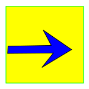
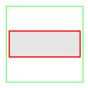
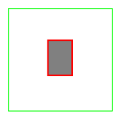
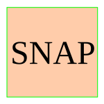

Flash-Cards
Presentazione
Flash-Cards è una applicazione scritta in HTML5 + CSS3 + JS che è stata sviluppata dagli studenti della 5AIS del IIS C. Olivetti di Ivrea.
L'applicazione si propone di aiutare i maturandi, e cioè noi stessi, nella preparazione dell'orale dell'esame di Maturità offrendo allo studente la possibilità di esercitarsi rispondendo a delle domande simili a quelle che potrebbero essere formulate dai commissari in sede di esame.
Il funzionamento del programma Flash-Cards si fonda su di una base di conoscenza KBS memorizzata in formato JSON.
Questa scelta consente di utilizzare le funzionalità del DBMS di cui è dotato il programma OLS per introdurre le informazioni concernenti le domande e le risposte esatte e sbagliata.
In prospettiva le domande e le risposte potrebbero essere generate automaticamente a partire dalle dispense del professore, analizzando le informazioni semantiche contenute nel codice HTML.
Scelta la domanda (il programma offre la possibilità di scelta fra la proposta di domande casuali o in sequenza prefissata) il programma genera il codice HTML corrispondente alla dialog-box che viene presentata.
Le schede mostrate agli utenti propongono una domanda, quattro possibili risposte di cui una sola corretta e tre sbagliate, una immagine (opzionale) e il link alle dispense del docente o il riferimento alle pagine nel testo in cui lo studente può trovare la risposta al quesito.
Se lo studente risponde correttamente alla domanda che gli è stata posta il programma passa automaticamente alla domanda successiva in caso contrario gli viene offerta la possibilità di riprovare.
Il programma tiene conto delle domande e del numero delle risposte corrette o sbagliate.
Il nostro MOOC coniuga le funzionalità di un sistema esperto a frame con la tecnologia Web, affidando al primo la responsabilità di gestire e coordinare le strategie di apprendimento mentre le seconde sono state impiegate per realizzare una interfaccia grafica multimediale e ipertestuale che prospetta la possibilità di accedere alle informazioni che necessitano allo studente letteralmente con un click.
Prensentazione (5AIS)
OLS: il viaggio dal dato alla conoscenza (poster).
The knowledge refinery.ppt
Costruire con la conoscenza.mp4
Funzioni associate alle icone.
inizio
First Record
Apri la prima scheda della collezione.
precedente
Previous Record
Apri la scheda precedente.

seguenteNext Record
Apri la scheda seguente.
fine
Last Record
Apri l'ultima scheda della collezione.
leggi
Read Aloud
Legge ad alta voce i valori delle voci della scheda selezionata.
azzera
Reset counters
Azzera i contatori dell'applicazione.
zitta
Shut Up
Interrompi la lettura ad alta voce,
 aiuto
aiuto
Help
Apre la schermata di Help contestuale mostrando le informazioni concernenti le funzioni disponibili nel contesto considerato.

comando_LNNL command
Funzione nulla.

eseguiSubmit command
Esegui Comando in linguaggio naturale.

fotografaSnap shot
Scatta una "istantanea" della vista utente corrente che rende disponibli per il salvataggio in una nuova finestra.